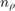
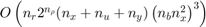
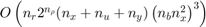

Stability and Gain of an LPV system
LPVTools provides a suite of functions to analyze the stability and gain of LPV systems. Meanwhile, LPVTools synthesis functions generate controllers that are provide closed-loop stability for an LPV system, while optimizing the gain. This section will discuss what stability and gain mean for an LPV system. Furthermore, this section highlights some of the computational issues that arise when LPV analysis conditions are implemented.
Contents
Stability and Gain of an LPV system
LPV systems are time-varying, state-space models of the form:
where is a vector of measurable parameters,  is a vector of outputs, is the state vector, is a vector of inputs, and , , and
is a vector of outputs, is the state vector, is a vector of inputs, and , , and  are parameter dependent matrices.
are parameter dependent matrices.
The LPV system in Equation (1) depends on a set of time-varying parameters . The trajectories of the parameters are assumed to take on values in a known compact set , and to have known bounds on their derivatives with respect to time: , where and . A trajectory is said to be "rate unbounded" if and .
The LPV system processes the inputs linearly, but can depend nonlinearly on the time-varying parameter . The analysis problem is is to determine if the system is stable, and to quantify the input-to-output gain of the system. Denote the LPV system in Equation (1) by . Analysis in the LPV framework determines if is internally exponentially stable, and whether the input/output map from to has certain properties.
Definitions of Gain
LPVTools implements two methodologies for synthesis and analysis in the LPV framework. The two methodologies differ in their formulation of the input/output map . The first methodology formulates this input/output map in terms of the induced norm (gain) of the system:
In calculating this induced norm it is assumed that . The second methodology formulates the input/output map in terms of the stochastic LPV bound on :
which describes the variance of when the input is a zero mean, white-noise processes with unit intensity.
Computing the nominal norm of a grid-based LPV system:
lpvnorm implements algorithms to compute the gain of LPV systems. This section will review the analysis conditions that lpvnorm implements to compute the induced norm of a grid-based nominal (not uncertain) LPV system. These analysis conditions will serve to illuminate many of the key issues in LPV analysis techniques. Refer to the references at the end of this chapter for conditions used in other analysis scenarios.
The Objective
The theory underpinning the LPV analysis results which are implemented in lpvnorm frames the analysis problem in terms of a dissipation inequality. For the LPV system in Equation (1), the problem boils down to a set Linear Matrix Inequalities (LMIs) which need to be solved to prove that:
for all and , with some and initial condition .
Solving the LMIs to show that the dissipation inequality in Equation (4) holds, is sufficient to prove that the system is internally exponentially stable, and that the gain of the system has a finite upper bound (). The nominal induced norm analysis conditions used by lpvnorm are based on result by F. Wu. [1,2]
Analysis Conditions
The following theorem, taken from [1,2], gives a condition for an upper bound on the induced norm of the nominal LPV system in Equation (1). For simplicity we will assume that the rate bounds on the parameter are symmetric: .
Theorem 1: If there exists a piecewise continuous symmetric function and a , such that and
, and  , with
, with  , then:
, then:
- The system is parametrically-dependent stable over .
- with such that .
The theorem above assume that the rate bounds of the time-varying parameter are symmetric, but it can be extended to the unsymmetric case, and the software handles the unsymmetric case. The conditions in Theorem 1 are a parameterized set of linear matrix inequalities (LMIs) that must be verified for all and all . The conditions are infinite dimensional, since , , , and  are all continuous functions of the parameter .
are all continuous functions of the parameter .
Implementation in LPVTools
Its possible to obtain an approximate solution to the infinite dimensional feasibility conditions in Theorem 1 by converting them into a finite-dimensional set of Linear Matrix Inequalities (LMIs). This is accomplished by the following proceedure:
- Grid the set into a set of
 parameter values: . Require that the LMIs in Equation (5) hold at each grid point.
parameter values: . Require that the LMIs in Equation (5) hold at each grid point. - Pick a basis for so that , where
 is the number of basis functions used to construct , the scalar functions are the chosen basis functions, and are constant matrices to be determined (see the tutorial on picking basis functions for an example of how are defined in LPVTools). If the parameter's in the LPV system are rate unbounded (i.e. ) then use a constant (parameter independent) Lyapunov matrix .
is the number of basis functions used to construct , the scalar functions are the chosen basis functions, and are constant matrices to be determined (see the tutorial on picking basis functions for an example of how are defined in LPVTools). If the parameter's in the LPV system are rate unbounded (i.e. ) then use a constant (parameter independent) Lyapunov matrix . - Exploit the fact that the enter affinely in Equation (4) to reduce the problem to LMIs at each grid point. Specifically, if the LMIs hold for all combinations of (a total of combinations formed by the -dimensional polytope: ) then they hold for all . This reduces the problem to LMIs total ( grid points, with LMIs at each point.)
- Solve for and
 , subject to the LMIs formed at the grid points by the condition in Equation (5).
, subject to the LMIs formed at the grid points by the condition in Equation (5).
The function lpvnorm implements this proceedure to approximately solve the conditions in Theorem 1 by enforcing the LMIs on the set of gridded points in the domain of the grid-based LPV system (for a grid-based LPV system the set of possible values, , is gridded as a matter of course during the modeling process).
The computational growth of these conditions is an issue. Let denote the total number of grid points used to approximate . A rate bounded analysis must enforce the LMI conditions at all grid points and for all combinations of . Thus there are a total of constraints, each of dimension . If there are basis functions, then the Lyapunov matrix has symmetric matrix decision variables each of dimension . This gives a total of individual decision variables in the rate bounded analysis. LMI optimization solvers have an asymptotic complexity that depends on both the number of decision variables and the number/dimension of LMI constraints. For example, LMILab has a floating point operation growth of O() where is the total row dimension of the LMI conditions and  is the total number of decision variables [3]. This complexity assumes the default Cholesky factorization of the Hessian matrix is used to solve the least squares problem that arises in each iteration. Thus the complexity of solving the LPV analysis condition is roughly . This growth limits the analysis to a modest number of parameters, grid points, and basis functions.
is the total number of decision variables [3]. This complexity assumes the default Cholesky factorization of the Hessian matrix is used to solve the least squares problem that arises in each iteration. Thus the complexity of solving the LPV analysis condition is roughly . This growth limits the analysis to a modest number of parameters, grid points, and basis functions.
Alternative Approaches
The LPV analysis problem is formulated differently when the system is represented in the LFT-based LPV framework. In this case, the rate-bounds can still be taken into account in the analysis, but they do not require the user to define basis functions. The resulting feasability conditions are different from the ones listed in the grid-based LPV analysis above. However, the implementations of the two approaches have many features in common: Solution involves convex constraints (LMIs), and the complexity grows with . Further information on the analysis conditions for the LFT-based LPV approach can be found in P. Apkarian and P.Gahinet [4], A. Packard [5], A. Helmersson [6], and C. Scherer [7].
The analysis conditions that apply for the stochastic LPV bound can be found in the work by F. Wu [1], and the results for worst-case LPV analysis can be found in C. Scherer [7,8,9] and H. Pfifer and P. Seiler [10].
References
- F. Wu, "Control of Linear Parameter Varying Systems," PhD thesis, University of California, Berkeley, 1993.
- F. Wu, X. Yang, A. Packard, and G. Becker, "Induced L2 norm control for LPV systems with bounded parameter variation rates," International Journal of Nonlinear and Robust Control, vol. 6, pp. 983-998, 1996.
- P. Gahinet, A. Nemirovski, A. Laub, and M. Chilali, "LMI control toolbox user's guide," tech. rep., The Mathworks, 1995.
- P. Apkarian and P.Gahinet, "A convex characterization of gain-scheduled Hinfinity controllers," IEEE Transactions on Automatic Control, vol. 40, no. 5, pp. 853-864, 1995.
- A. Packard, "Gain scheduling via linear fractional transformations," Systems and Control Letters, vol. 22, no. 2, pp. 79-92, 1994.
- A. Helmersson, "An IQC-based stability criterion for systems with slowly varying parameters," Technical Report LiTH-ISYR-1979, Linkoping University 1997.
- C. Scherer and S. Wieland, "Linear matrix inequalities in control," Lecture notes for a course of the dutch institute of systems and control, Delft University of Technology, 2004.
- C. Scherer and I. Kose, "Robustness with dynamic IQCs: An exact state-space characterization of nominal stability with applications to robust estimation," Automatica, Vol. 44, No. 7, pp. 1666-1675, 2008.
- C. Scherer, "LPV control and full-block multipliers," Automatica, Vol. 37, No. 3, pp. 361-375, 2001.
- H. Pfifer, and P. Seiler. "Robustness analysis of linear parameter varying systems using integral quadratic constraints," International Journal of Robust and Nonlinear Control, 2014, doi: 10.1002/rnc.3240.